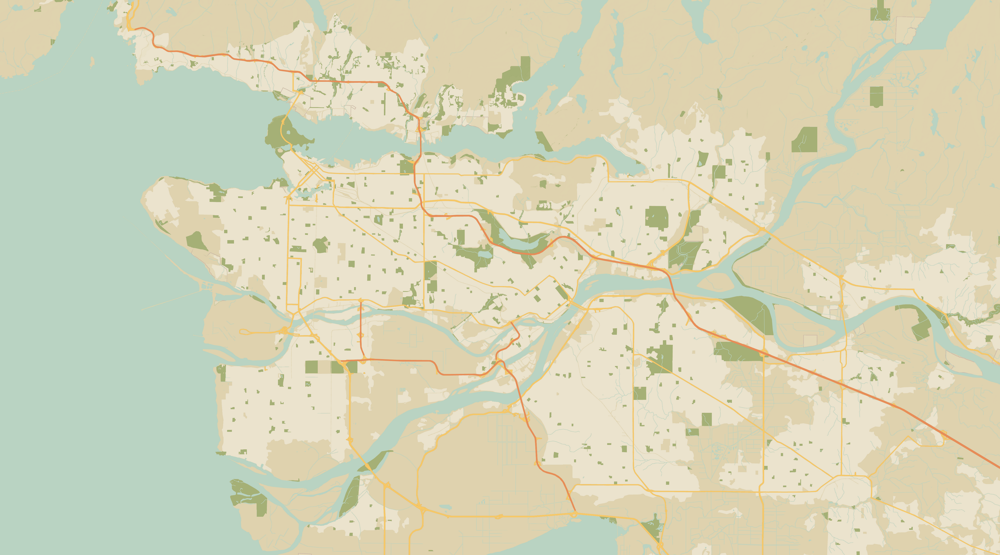

A creek that I drive by every day without realizing its presence.
Everytime I head to school, it runs with me all the way down the mountain. Then, I will drive across it on a tiny bridge, which I never thought is a bridge.
It flows quietly, unnoticed by most. But it is the life source for the surrounding ecosystem. The bears, the deer, and the birds all depend on it.
It is quiet, yet, powerful. And today, I finally known its name, Brothers Creek.
- Ryan
A water acknowledgement map of the lands and waterways around us.
This project is a reminder that the creeks, rivers, and streams we pass every day have names, histories, and life of their own.
Click on a highlighted waterway to learn more about it.
Made and designed by Ryan Wang in collaboration with SG, and Olivia
Map data sourced from Google Maps
Work Cited →
← Back